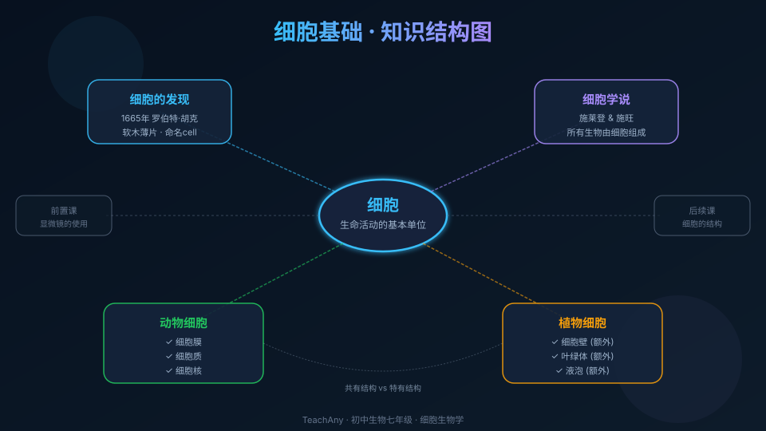

Interactive Canvas
虚拟显微镜:观察细胞
拖动下方滑块调节放大倍数,观察洋葱表皮细胞在不同倍率下的形态变化。点击按钮切换观察对象。
当前放大 100 倍 - 可以看到规则排列的长方形细胞轮廓
所有生物体都由细胞构成吗?一滴水中藏着怎样的微观世界?让我们走进细胞的世界,探索生命最基本的结构单位。

先选一个你关心的问题。后面的例子、提示和 AI 学伴都会围绕这个问题来帮你推进。
选择或输入后,本课会围绕你的问题展开。
不用担心答错,前测是帮你发现自己的知识起点。
已经知道:生物体有各种各样的形态和功能,有的肉眼可见,有的需要借助工具观察。
但是问题是:在显微镜发明之前,没有人知道生物体内部究竟由什么基本单元组成。
所以这一段要解决:了解科学家如何一步步发现细胞,并建立起细胞学说。
英国科学家罗伯特·胡克用自制的显微镜观察软木薄片,发现了许多蜂窝状的小格子。他把这些小格子命名为"cell"(细胞),原意是"小房间"。实际上,胡克看到的是已死亡细胞的细胞壁。
德国植物学家施莱登和动物学家施旺分别研究了大量动植物组织后,提出了细胞学说:所有动植物都由细胞组成,细胞是生命活动的基本单位。这是生物学最重要的基本理论之一。
1855年,德国医生魏尔肖进一步提出"细胞来自细胞"(细胞通过分裂产生新细胞),完善了细胞学说。现代研究证实,除病毒外,所有生物都由一个或多个细胞组成。
已经知道:生物体能进行新陈代谢、生长发育、繁殖等生命活动。
但是问题是:这些生命活动的"执行者"到底是谁?为什么不是器官或分子?
所以这一段要解决:理解为什么细胞(而非更大或更小的层次)是生命活动的基本单位。
单细胞生物(如草履虫、变形虫)只有一个细胞,但能独立完成运动、呼吸、消化、排泄和繁殖等所有生命活动。这说明一个细胞就足以承担完整的生命功能。
所有的化学反应(呼吸作用、光合作用等)都在细胞内进行。离开细胞,这些反应无法有序进行。细胞提供了生命活动所需的结构基础和物质环境。
多细胞生物的结构层次:细胞 → 组织 → 器官 → 系统 → 个体。细胞是这个层次体系中最基础的一级,是构建生命大厦的"砖块"。
拖动下方滑块调节放大倍数,观察洋葱表皮细胞在不同倍率下的形态变化。点击按钮切换观察对象。